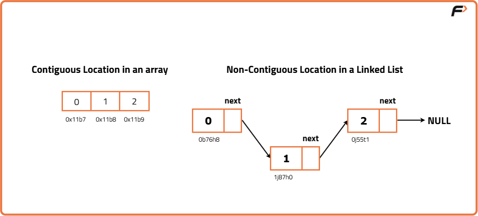
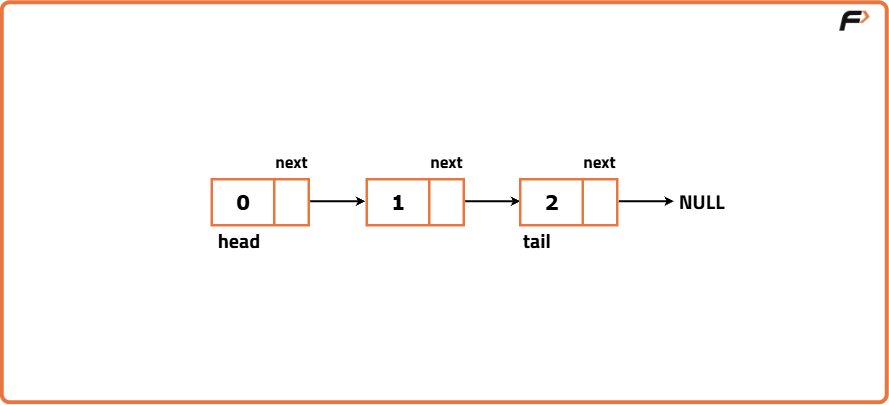
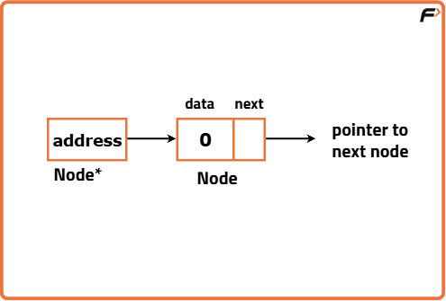
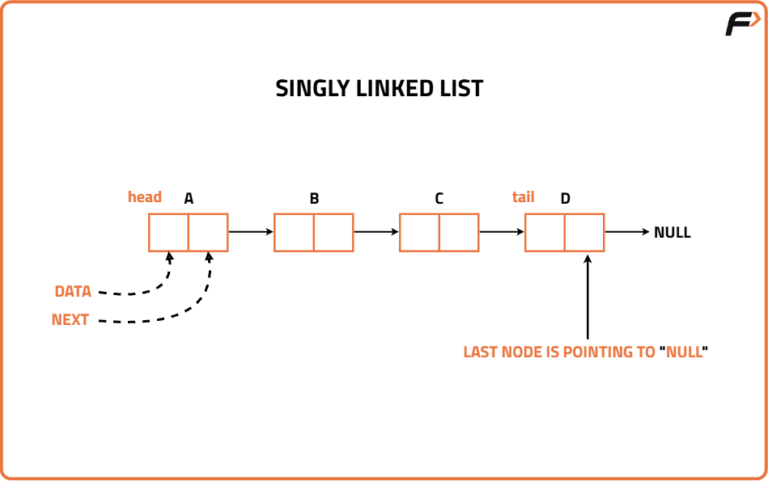
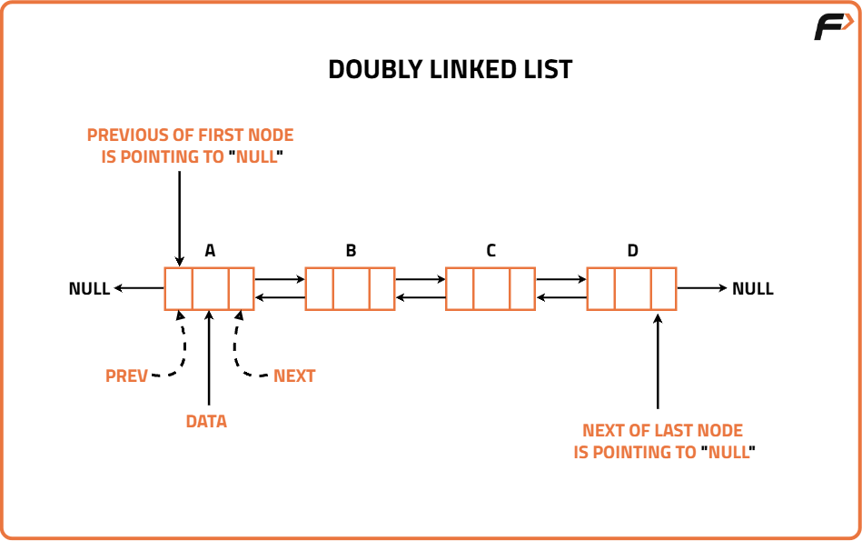
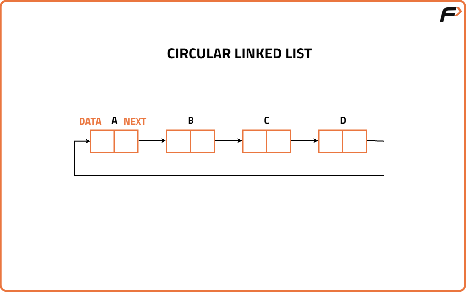

Linked List : Introduction
What is a Linked List?
Imagine you are given a task where you have to maintain a data entry of cars entering a parking lot. Since the number of cars entering will be different and may change daily, constructing a fixed-sized data structure like an array might not be helpful. This is when linked lists come into the picture, which allows us to add and remove cars easily. Linked List is a linear data structure that can be visualized as a chain with different nodes connected, where each node represents a different element. The difference between arrays and linked lists is that, unlike arrays, the elements are not stored at a contiguous location.
For any element to be added in an array, we need the exact next memory location to be empty and it is impossible to guarantee that it is possible. Hence adding elements to an array is not possible after the initial assignment of size.

A linked list is a data structure containing two crucial pieces of information, the first being the data and the other being the pointer to the next element. The ‘head’ is the first node, and the ‘tail’ is the last node in a linked list.

Creating a Linked List
There are two information sets to store at every node, thus there is a need to create a self-defined data type to handle them. Therefore, we will use the help of structs and classes. To learn about structs and classes, you can refer to this article.
Code
#include <bits/stdc++.h>
using namespace std;
// Node class represents a node in the linked list
class Node {
public:
int data; // Data value
Node* next; // Pointer to next node
// Constructor with data and next
Node(int data1, Node* next1) {
data = data1;
next = next1;
}
// Constructor with only data
Node(int data1) {
data = data1;
next = nullptr;
}
};
int main() {
// Create an array
vector<int> arr = {2, 5, 8, 7};
// Create first node
Node* y = new Node(arr[0]);
// Print memory location of node
cout << y << '\n';
// Print data stored in node
cout << y->data << '\n';
return 0;
}
Let's break this example to understand how it works:
- The class has two data types: data which contains the value of the node and a pointer next, which points to the next node in the list.
- There is a constructor which assigns the values to a new node.
- A new keyword is used to dynamically allocate memory to a node with data as arr[0].
Understanding Pointers
A pointer is a variable that stores the memory address of another variable. In simpler terms, it "points" to the location in memory where data is stored. This allows you to indirectly access and manipulate data by referring to its memory address.
Java does not explicitly use pointers or take the address of variables as you do in C++. Instead, we have reference variables. These reference variables do not directly contain memory addresses like pointers in languages such as C or C++. Instead, they hold references to objects in memory.
Understanding the difference between Node and Node*: A node refers to the structure that contains data and the pointer to the next node. In contrast, Node* (Node pointer) specifically denotes a pointer variable that stores the address of the Node it is pointing to.

Memory Space:
Let’s talk about assuming the data stored is integer. Another main difference between an array and a linked list is the memory used. In the case of an array, we are storing integers that consume 4 Bytes for every int, whereas in a linked list, we are storing data and a pointer at every node, so the memory used up will depend on the configuration of the system.
| 32 Bit System | 64 Bit System |
| Int - 4 Bytes | Int - 4 Bytes |
| Pointer - 4 Bytes | Pointer - 8 Bytes |
| Overall - 8 Bytes | Overall - 12 Bytes |
Therefore, in the case of a 64 Bit system, it occupies or consumes more space than a 32 Bit system.
Applications of Linked Lists:
- Creating Data Structures: Linked lists serve as the foundation for building other dynamic data structures, such as stacks and queues.
- Dynamic Memory Allocation: Dynamic memory allocation relies on linked lists to manage and allocate memory blocks efficiently.
- Web Browser is one important application of Linked List.
Types of Linked Lists:
- Singly Linked Lists: In a singly linked list, each node points to the next node in the sequence. Traversal is straightforward but limited to moving in one direction, from the head to the tail.

- Doubly Linked Lists: In this each node points to both the next node and the previous node, thus allowing it for bidirectional connectivity.

- Circular Linked Lists: In a circular linked list, the last node points back to the head node, forming a closed loop.
